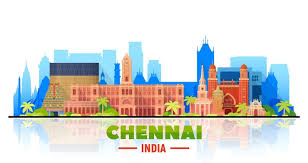
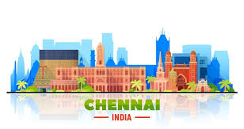
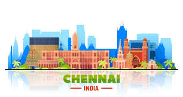
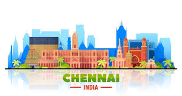

Chennai is the capital city of Tamil Nadu and lies along the Bay of Bengal. It is famous for Marina Beach, one of the longest urban beaches in the world. The city has a strong cultural background and is known for classical music, Bharatanatyam dance, and traditional temples. Festivals like Pongal are celebrated with great enthusiasm.
Chennai is also an important industrial and educational center of India. It is called the "Detroit of India" because many automobile companies have manufacturing units here. The city has many colleges, hospitals, and IT parks, making it a growing metropolitan city that mixes tradition with modern development.